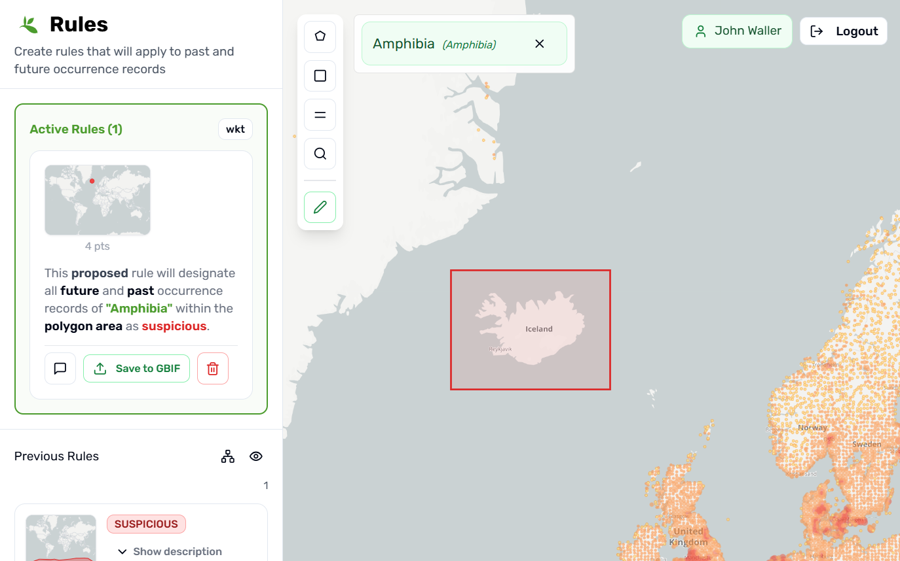

NOTE: This is experimental, and the implementation may change. GBIF makes no guarantees about the availability or stability of this tool.
Rule-based annotations is an experimental tool that will allow users to mark certain occurrence data as suspicious. The main goal of the project is to facilitate data cleaning and user feedback to publishers.
Creating and visualizing rules using the annotation interface at labs.gbif.org/annotations
How to make rules
To make a simple rule:
-
Log in with your GBIF username and password.
-
Select the taxon you want to make rules for.
-
Draw a polygon of a region you want to make the rule about.
-
Save the rule to GBIF.

Example rule marking future and past occurrence records of class Amphibia on Iceland as Suspicious.
User Guide
Basic Rule Structure
A basic rule in our system looks like this:
rule → taxon in geo-polygon are controlled vocab
In our system a geo-polygon is a Well-Known Text (WKT) object.
Simple example rules:
| Rule |
|---|
rule → Amphibians in Greenland are suspicious |
rule → Penguins in Norway are suspicious |
rule → Lions in Ocean are suspicious |
Creating rules
Rules are required to be linked to a taxon in the GBIF taxonomy. Users can search for taxa using the search box in the top left corner of the page. Once a taxon is selected, users can create rules by drawing polygons on the map.
The default annotation type for making rules is suspicious. This is because the annotation system is primarily intended to be a data cleaning tool. It is possible to select another annotation type after clicking “add more complexity” in the save to GBIF dialogue pop up.
We believe that it is easier to mark areas as suspicious rather than trying to create uncontroversial native range maps. So we discourage users from using other annotations types unless absolutely necessary.
All rules created by any user are publicly available for everyone to use for cleaning downloads or annotating records.
While only the rule creator can edit their rules, all users can benefit from the community’s collective knowledge when filtering their data. See the gbifrules R package section below for how to use rules to clean GBIF downloads.
Users can view and edit their rules by clicking on their username in the top right corner of the map page.
Example user page showing all rules created by user jwaller. Users can also edit rules on this page.
Inverting polygons
It is often quite useful to invert a selection, so that everywhere but the polygon area is marked as suspicious.
This species is only found in Mexico, so all occurrences outside of Mexico are suspicious.
This can be done after drawing the polygon by clicking the “invert polygon” button in the edit polygon drop down.
Complex rules
Sometimes it is useful to add more complexity to a rule. For example, you might want to mark all occurrences of a taxon in a polygon as suspicious only for occurrences that are from a certain dataset or have a certain basis of record.
There are no extant Amphibian populations in Svalbard, but there are legitimate fossil records.
This is possible by using the “add more complexity” button in the save to GBIF dialogue pop up.
With complex rules users can restrict the rule to only apply to certain basisOfRecord, datasetKey, or year ranges.
Why not annotating individual occurrence records?
The rule-based approach offers significant advantages over annotating individual occurrence records, making it a more powerful and forward-looking solution for data quality management.
Rules can pre-catch future issues in data that haven’t even been published yet. When you create a rule marking penguins in Norway as suspicious, it will automatically flag any future penguin records from Norway that get added to GBIF, without requiring manual review of each new occurrence. On the other hand, if records that previously got caught in a rule have been corrected, they will automatically no longer be flagged, contrary to occurrence annotations that would still persist even though they are no longer valid.
With rules, you can still create highly specific rules that effectively target problematic individual records from a particular dataset by combining multiple filters to narrow the scope:
Example scenario: You’ve found a single suspicious Panthera leo record within the normal range of the species from a specific dataset.
Instead of annotating that one occurrence, create a rule that:
- Targets the taxon (Panthera leo)
- Draws a small polygon around the suspicious location
- Restricts to the specific datasetKey
By combining geographic, taxonomic, and dataset filters, you can create rules that are nearly as specific as individual occurrence annotations while remaining robust to gbifid instability and future legitimate occurrences coming from other sources.
See the example below that used the “Create Rule from Search” button to create a rule that targets a specific record.
Rules are not range maps
Rules can look like range maps at first glance because they use polygons on a map. But rules are not range maps. They are more flexible and more powerful than traditional range maps because they are designed for data cleaning, not for defining a full distribution.
Rules can express uncertainty in a way range maps usually cannot. Often you don’t need to be an expert to create useful rules for a species or group. Drawing a rough inverted box around a continent is sometimes very helpful. Rules can also be narrowly targeted to specific datasets, time periods, or record attributes, which makes them useful for addressing known data issues without having to make a definitive range.
What is a Suspicious Record?
Determining whether an occurrence record is suspicious can be somewhat subjective, and there is often a gray area between clearly legitimate and clearly problematic records. Common examples of suspicious records include mis-identifications, locality coordinate disagreements, obvious outliers, records from zoos or botanical gardens, and records that provide the location of the museum housing a specimen rather than where it was originally collected.
While GBIF already implements some automated flagging of some suspicious records, the rule-based annotation tool is designed to complement these existing checks by allowing users to create bespoke rules that are limited to specific taxa and datasets.
The community-driven nature of rule-based annotations means that experts familiar with particular species or geographic areas can contribute their knowledge to help identify records that automated systems might miss, while still acknowledging that not all flagged records will be definitively wrong and some legitimate records may occasionally be caught by overly broad rules.
What About Filtering Ocean Records?
While it’s technically possible to create rules marking terrestrial species in ocean areas as suspicious, we recommend using specialized cleaning tools for this task instead of the GBIF rule-based annotation system. It is quite tedious to trace the coastline, and this isn’t really necessary given the availability of tools that can automatically flag records with coordinates in the ocean as suspicious.
The CoordinateCleaner R package is great for detecting common spatial errors in occurrence data, including ocean records for terrestrial species.
Voting
For downstream users, deciding which rules to use might become challenging without some quality control. Currently, we have implemented a simple upvote-downvote system for rules. With voting users could see what annotations are supported by the broader community, and create cleaning scripts that only use annotations supported by the community.
Higher taxonomy
Creating rules for every species in a group can be slow and inefficient. For this reason, our system allows users to create rules using higher taxonomy. For example, it is well known that there are no Amphibians in Antarctica, so rather than creating a separate rule for every species, one can write one rule for the whole group.
rule → Amphibians in Antarctica are Suspicious
Rules can be created for higherrank taxa that can then be used to filter occurrence records on lower ranks. The UI allows users to toggle between viewing rules already created at a higher level.
Now users making rules for lower level groups or species don’t need to worry about making rules about Antarctica.
Using projects
A project is a collection of rules. Projects are intended to allow for collaboration between users and logical grouping of rules. Projects can be created and browsed using the user interface at labs.gbif.org/annotations/projects. Users can set the active project so that any rules they create are added to that project. Users can also add pre-existing rules to a project by editing the rule and selecting the project from a drop down menu.
Projects can be created on user pages. Users can set the default project they want to create rules in.
Only members of a project can create and edit rules within that project. However, all projects and their rules are publicly available for browsing and use. Any user can create a project and invite other GBIF users to collaborate.
Cleaning GBIF downloads with R
User created rules can be used to clean GBIF downloads with the R package gbifrules. The R package gbifrules provides functions to clean GBIF downloads using user created rules. At the time of writing this post, the clean_download() function in the gbifrules package is the only way to filter GBIF downloads using user created rules. See below for future plans for integration into GBIF.org.
# Install
pak::pak("gbif/occurrence-annotation/r-package/gbifrules")
library(gbifrules)
library(rgbif)
# Ambystoma mexicanum
# occ_download(
# pred("taxonKey","2431950"),
# pred_default(),
# format = "SIMPLE_CSV"
# )
# Download and clean
# Download was already made earlier
d <- occ_download_get('0004693-260120142942310') %>%
occ_download_import()
clean_download(d)
# Or filter your data using only rules from a specific project:
clean_download(d, project_id = 1)
── Cleaning Summary ──────────────────────────────────────────────────────────────────────────────
• Records in original download: 720,217
✖ Suspicious records removed: 14 (0.0019%)
✔ Records remaining: 720,203
Kept: ██████████████████████████████
How clean_download() Works
- Fetches rules from the GBIF API for taxon keys in your data
- Applies spatial filters using polygon geometries from annotation rules
- Evaluates additional criteria like basisOfRecord and datasetKey if specified
- Returns cleaned data with suspicious records removed or flagged
Next Steps and Integration into GBIF.org
Currently, rules are only available through the labs.gbif.org/annotations interface and the R package gbifrules. Rules do not appear on or get used on the main GBIF.org site or appear on maps or filter occurrences in downloads. It is anticipated that if the tool becomes popular and widely used, that rules will be integrated into the main GBIF.org systems in the future.
How to Provide Feedback
If you have any suggestions for improving this tool, please create an issue on our GitHub repository at github.com/gbif/occurrence-annotation.